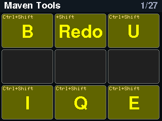
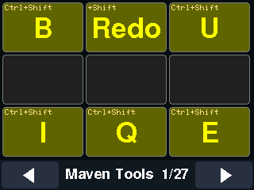
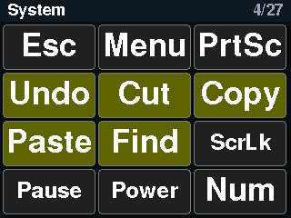
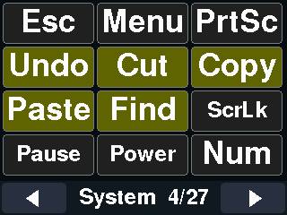
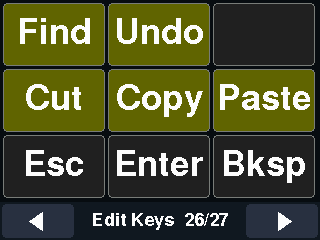

1 Maven Tools 3×3
Ctrl+Shift chords for a Maven/IDE set-up (B, U, I, Q, E and a Shift+Redo tile). The middle row is deliberately empty; empty tiles are drawn dim and send nothing.


 Classic: Work and editing
Classic: Work and editingPages 1, 2, 3, 4, 26 of 27 in the classic interface.
History. The screenshots and measurements on this page date from the time when both boards showed all pages. Since then the Core2 has become the presentation clicker and the CoreS3 the macro pad; the current screens are on the Pages and Clicker pages.
Maven, Office, editing, system keys and the keys you edit with. Pages 1, 2, 3, 4, 26, classic interface.
Ctrl+Shift chords for a Maven/IDE set-up (B, U, I, Q, E and a Shift+Redo tile). The middle row is deliberately empty; empty tiles are drawn dim and send nothing.


Hyper-key chords (Ctrl+Shift+Alt+Win) with W, X, P, O, T, N, B, E, Y and L. On Windows these open the Microsoft 365 apps; the tiles show app icons (Word, Excel, PowerPoint, Outlook, Teams, OneNote, browser, Explorer, lock).


Editing and navigation: Insert, Delete, Home, End, Page Up and Down, the four arrows, plus copy, paste, cut, undo and select-all. Tiles tagged +Shift send the shifted variant.


System keys: Esc, Menu, Print Screen, Pause, Scroll Lock and Num Lock, the Ctrl+Z/X/C/V clipboard set and Ctrl+F. The power key is drawn but not sent yet (the System report is still on the to-do list).


Clipboard and editing: find, undo, cut, copy and paste with captions, plus Esc, Enter and Backspace.

